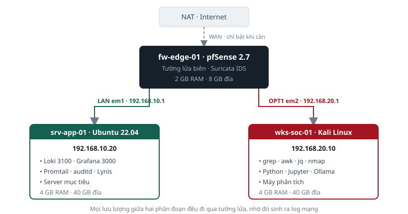

PHẦN B · HIỂU MÔI TRƯỜNG#
Ba máy ảo, sơ đồ mạng và bộ công cụ
- Ba máy ảo và vai trò của từng máy
- Sơ đồ mạng và lý do phân đoạn
- Danh mục công cụ đã cài sẵn
PHẦN B · MÔI TRƯỜNG
Chương 4 · Ba máy ảo và vai trò của từng máy#
Mỗi máy có một vai trò riêng. Hiểu vai trò giúp bạn biết nên chạy lệnh ở máy nào.
4.1. Bảng vai trò#
| Máy | Địa chỉ | Vai trò trong bộ lab | Dùng ở bài nào |
|---|---|---|---|
| fw-edge-01 pfSense 2.7 |
192.168.10.1 192.168.20.1 |
Firewall biên và IDS. Cho bạn thấy một mạng có phân đoạn hoạt động ra sao | Bài 1.1, 3.3, 5.3 |
| srv-app-01 Ubuntu 22.04 |
192.168.10.20 | Server mục tiêu và nền tảng truy vấn log. Nơi chạy Loki và Grafana | Bài 2.2, 2.4, 3.1, 3.2, 4.1 đến 4.3, 5.1, 5.3 |
| wks-soc-01 Kali Linux |
192.168.20.10 | Máy phân tích. Nơi chạy phần lớn lệnh phân tích dữ liệu, huấn luyện mô hình và trợ lý AI | Bài 1.2, 2.1, 2.3, 3.4, 4.4, 4.5, 5.2, 6.1 đến 6.3 |
4.2. Vì sao không có máy Windows#
Bộ dữ liệu có hai file log Windows: log bảo mật và log process chi tiết. Bạn sẽ phân tích đầy đủ hai file này, nhưng không cần một máy Windows chạy thật.
Lý do là một máy Windows chạy trong hai giờ chỉ sinh ra vài trăm sự kiện, trong khi file dữ liệu cấp sẵn có 96.618 sự kiện bảo mật và 64.004 sự kiện process, trải trên 14 ngày, có đủ nhiễu nền để luyện kỹ năng phân biệt bình thường và bất thường. Bỏ máy Windows tiết kiệm 4 GB bộ nhớ và 60 GB ổ đĩa cho mọi học viên.
PHẦN B · MÔI TRƯỜNG
Chương 5 · Sơ đồ mạng và lý do phân đoạn#
Hai máy Kali và Ubuntu nằm ở hai phân đoạn khác nhau. Mọi lưu lượng giữa chúng đều đi qua firewall.
5.1. Sơ đồ#
Sơ đồ mạng môi trường thực hành

5.2. Vì sao phải phân đoạn#
Nếu ba máy nằm chung một dải mạng phẳng, lưu lượng giữa chúng không đi qua firewall, nên firewall không ghi được log nào. Bạn sẽ không thấy được một điều quan trọng của công việc thật.
GHI NHỚ
Log firewall nhìn thấy những thứ mà log hệ điều hành không nhìn thấy. Cụ thể: địa chỉ đích của một kết nối đi ra, và khối lượng dữ liệu đã chuyển. Trong bộ dữ liệu của bộ lab, địa chỉ đích của vụ data exfiltration chỉ xuất hiện trong log firewall và log luồng mạng. Nó không xuất hiện ở bất kỳ log hệ điều hành nào.
5.3. Kiểm chứng bằng lệnh#
Kiểm chứng
# Trên Kali, xem đường đi tới server Ubuntu
traceroute -n 192.168.10.20
# Kết quả có hai chặng:
# chặng 1: 192.168.20.1 là firewall
# chặng 2: 192.168.10.20 là server đích
# Hai chặng nghĩa là hai máy ở hai phân đoạn khác nhau.
PHẦN B · MÔI TRƯỜNG
Chương 6 · Danh mục công cụ đã cài sẵn#
Toàn bộ công cụ đã được cài và cấu hình. Bạn không cần cài thêm gì.
6.1. Công cụ trên máy Kali#
| Công cụ | Chức năng | Dùng ở bài | Lệnh kiểm tra |
|---|---|---|---|
| grep, awk, cut, sort, uniq | Lọc và thống kê log dạng văn bản | Hầu hết các bài | which grep awk |
| jq | Đọc và lọc file mỗi dòng một đối tượng JSON | 4.2, 4.4, 5.2 | jq --version |
| nmap | Quét phát hiện máy và dịch vụ | 1.2 | nmap --version |
| Python 3.11 | Chạy notebook và công cụ hỗ trợ | 4.5, 6.1, 6.2 | python3 --version |
| Jupyter | Môi trường notebook cho phần học máy | 4.5, 6.1, 6.2 | jupyter --version |
| scikit-learn, pandas | Thư viện học máy và xử lý dữ liệu bảng | 4.5, 6.1, 6.2 | python3 -c "import sklearn" |
| Volatility 3 | Phân tích memory image | 5.2 | python3 /opt/volatility3/vol.py -h |
6.2. Công cụ trên máy Ubuntu#
| Công cụ | Chức năng | Cổng | Dùng ở bài |
|---|---|---|---|
| Loki | Lưu trữ và lập chỉ mục log, trả lời truy vấn | 3100 | 4.1 đến 4.4 |
| Promtail | Đọc file log và đẩy vào Loki | không | 4.1 |
| Grafana | Giao diện truy vấn và dựng dashboard | 3000 | 4.2, 4.3 |
| auditd | Ghi log kiểm toán nhân hệ điều hành | không | 2.2 |
| Lynis | Kiểm định cấu hình an toàn hệ thống | không | 3.1 |
| restic | Backup và khôi phục dữ liệu | không | 2.4, 5.3 |
6.3. Ba công cụ hỗ trợ do ban tổ chức viết#
| File | Chức năng |
|---|---|
| ~/lab/congcu/logq.py | Thay thế jq trong trường hợp jq không dùng được. Cú pháp đơn giản hơn, xem mục 9.4 |
| ~/lab/congcu/kiem_luhn.py | Lọc bớt kết quả sai khi quét tìm số thẻ thanh toán, xem bài 2.1 |
| ~/lab/congcu/sinh_dulieu_v3.py | Bộ sinh dữ liệu. Bạn không cần chạy, nhưng có thể đọc để hiểu dữ liệu được tạo ra thế nào |